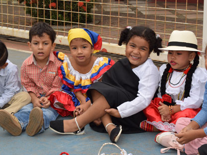

PROYECTO EDUCATIVO
Programas de alfabetización bilingüe y acompañamiento educativo desarrollados junto a comunidades rurales e indígenas.
SOBRE EL PROGRAMA
“Raíces” nació con el objetivo de garantizar el acceso a la educación respetando las lenguas, tradiciones y formas de aprendizaje de cada comunidad.
Trabajamos junto a líderes comunitarios, docentes locales y familias para desarrollar materiales educativos bilingües y espacios de aprendizaje accesibles.
El programa también promueve la preservación cultural mediante talleres de lectura, narración oral y escritura comunitaria.

IMPACTO
Beneficiarios directos
Países activos
Comunidades participantes
Materiales bilingües creados
ACTIVIDADES
Enseñanza en lengua originaria y español.
Formación pedagógica para educadores locales.
Producción de cuadernillos y recursos propios.
Espacios de lectura, historias y memoria oral.
Tu apoyo ayuda a que más comunidades puedan acceder a programas educativos respetuosos de su identidad.
Apoyar este proyecto